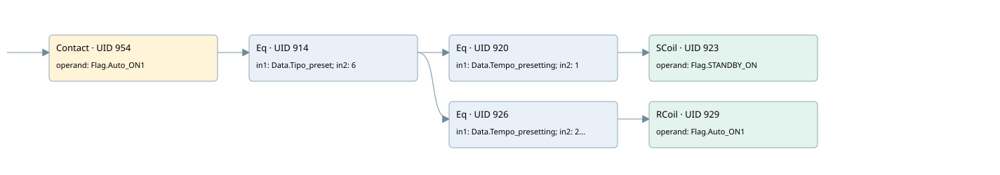

presetting sequence 6: no sequence
auto start motors · 검색 색인 순서 8 · 원본 내부 NID 추정 6
백업 PLF 원본의 2670435 바이트 위치에서 복원한 XML. 검색 문서 1848의 객체 키 16102200c610000000000000와 연결했다. 이름 해석 9/9개. 남은 RefId는 상수 또는 미해석 참조다.
연결 구조 다시 그리기
원본 Part/PCon/Wire를 이용한 연결도다. TIA 화면의 래더 배치 또는 실행 결과를 재현한 그림은 아니다. 핀 연결은 아래 표와 원본 XML을 기준으로 읽는다. 노드 위에 마우스를 두면 피연산자 이름을 볼 수 있다.

접점·코일·블록과 피연산자
| Part UID | Gate | Negated 핀 | 연결 피연산자 |
|---|---|---|---|
| 954 | Contact | operand = Flag.Auto_ON1 | |
| 914 | Eq | in1 = Data.Tipo_preset; in2 = 6 | |
| 920 | Eq | in1 = Data.Tempo_presetting; in2 = 1 | |
| 923 | SCoil | operand = Flag.STANDBY_ON | |
| 926 | Eq | in1 = Data.Tempo_presetting; in2 = 25 | |
| 929 | RCoil | operand = Flag.Auto_ON1 |
접점 경로를 펼친 조건식
Contact·O/A·비교기의 원본 연결을 읽기 쉽게 펼친 보조 해석이다. POWER는 전원 레일 시작을 뜻한다. 호출 블록·에지·타이머의 내부 동작과 다중 쓰기 순서는 이 표로 실행 검증하지 않았다. 미해석 핀과 RefId는 원문 연결표에서 확인한다.
| UID | 동작 | 대상 | 원본 접점 경로 | 내용 |
|---|---|---|---|---|
| 923 | SCoil | Flag.STANDBY_ON | ((Flag.Auto_ON1 AND [Data.Tipo_preset = 6]) AND [Data.Tempo_presetting = 1]) | 조건 성립 시 Set |
| 929 | RCoil | Flag.Auto_ON1 | ((Flag.Auto_ON1 AND [Data.Tipo_preset = 6]) AND [Data.Tempo_presetting = 25]) | 조건 성립 시 Reset |
원본 배선 연결
| Wire UID | 동일 Wire 연결 끝점 |
|---|---|
| 956 | Powerrail {} ↔ Part 954.in |
| 939 | ORef 930 (Flag.Auto_ON1) ↔ Part 954.operand |
| 955 | Part 954.out ↔ Part 914.pre |
| 940 | ORef 931 (Data.Tipo_preset) ↔ Part 914.in1 |
| 941 | ORef 932 (6) ↔ Part 914.in2 |
| 942 | Part 914.out ↔ Part 920.pre ↔ Part 926.pre |
| 943 | ORef 933 (Data.Tempo_presetting) ↔ Part 920.in1 |
| 944 | ORef 934 (1) ↔ Part 920.in2 |
| 945 | Part 920.out ↔ Part 923.in |
| 947 | ORef 935 (Flag.STANDBY_ON) ↔ Part 923.operand |
| 948 | ORef 936 (Data.Tempo_presetting) ↔ Part 926.in1 |
| 949 | ORef 937 (25) ↔ Part 926.in2 |
| 950 | Part 926.out ↔ Part 929.in |
| 952 | ORef 938 (Flag.Auto_ON1) ↔ Part 929.operand |
식별자 해석 근거 9개
| ORef UID | RefId | 이름 | IdentXmlPart 파일 | 해석 방법 |
|---|---|---|---|---|
| 930 | 4 | Flag.Auto_ON1 | 0577-IdentXmlPart.xml | UID/RID + search-text + NID agreement |
| 931 | 12 | Data.Tipo_preset | 0577-IdentXmlPart.xml | UID/RID + search-text + NID agreement |
| 932 | 79 | 6 | 0578-IdentXmlPart.xml | literal candidate: UID/RID/NID + nearby named declarations + search-text agreement |
| 933 | 7 | Data.Tempo_presetting | 0577-IdentXmlPart.xml | UID/RID + search-text + NID agreement |
| 934 | 8 | 1 | 0578-IdentXmlPart.xml | literal candidate: UID/RID/NID + nearby named declarations + search-text agreement |
| 935 | 29 | Flag.STANDBY_ON | 0577-IdentXmlPart.xml | UID/RID + search-text + NID agreement |
| 936 | 7 | Data.Tempo_presetting | 0577-IdentXmlPart.xml | UID/RID + search-text + NID agreement |
| 937 | 42 | 25 | 0578-IdentXmlPart.xml | literal candidate: UID/RID/NID + nearby named declarations + search-text agreement |
| 938 | 4 | Flag.Auto_ON1 | 0577-IdentXmlPart.xml | UID/RID + search-text + NID agreement |
검색 코드 보조 자료
참조 명칭을 찾기 위한 자료이며 실행 순서나 AND/OR 관계는 위 연결표로 확인한다.
"flag".auto_on1 "data".tipo_preset 6 "data".tempo_presetting 1 "flag".standby_on "data".tempo_presetting 25 "flag".auto_on1